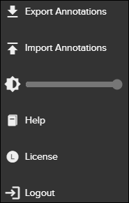

Annotations can be exported and imported in Pinpoint. While this functionality is applicable for Pinpoint Viewer and Pinpoint Standalone Light, it is mostly used for Pinpoint Standalone. It applies to the following scenario:
- The end-user receives a Pinpoint Standalone with data (version 1).
- The end-user creates annotations in this version.
- The end-user receives a new Pinpoint Standalone with updated data (version 2).
- The end-user wants to transfer annotations from version 1 to version 2.
To transfer annotations from one standalone version to another, do the steps that follow:
-
In the Action Bar, click the
 More button.
More button.

More Drop-down menu
-
From the
More drop-down menu, select Import
Annotations.